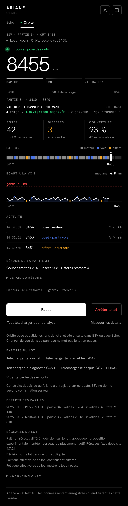
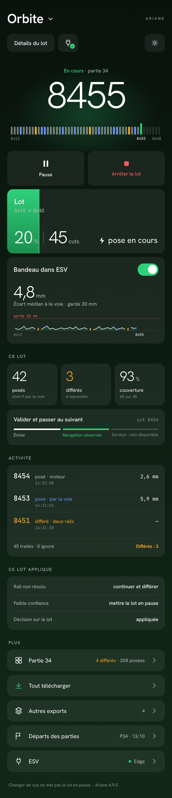
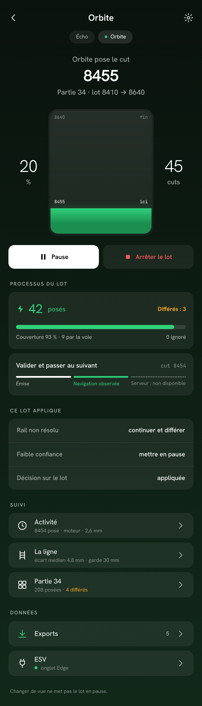
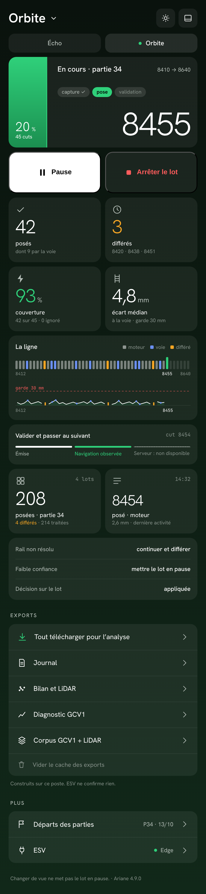
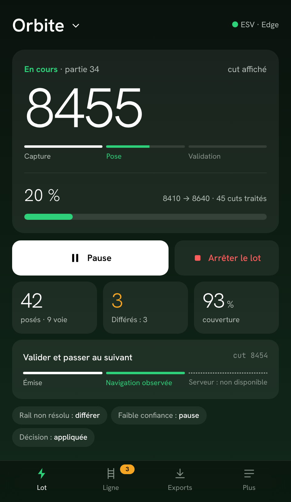

Thème sombre, 480 px de large, mêmes données fictives (lot en cours, cut 8455, partie 34).
Six barres fines, répétitions, tout au même poids, liens gris, phrases.

L’écran d’accueil Porsche : nom en grand, objet héros sur halo, tuile « batterie », tuile à interrupteur.

L’écran de recharge : jauge verticale entre deux chiffres, tuile processus, lignes à chevron vers des pages.

Les tuiles en damier : une tuile = une idée, icône, grand chiffre, petite unité.

La navigation Porsche : un écran sans défiler, barre d’onglets en pied (Lot, Ligne, Exports, Plus).
